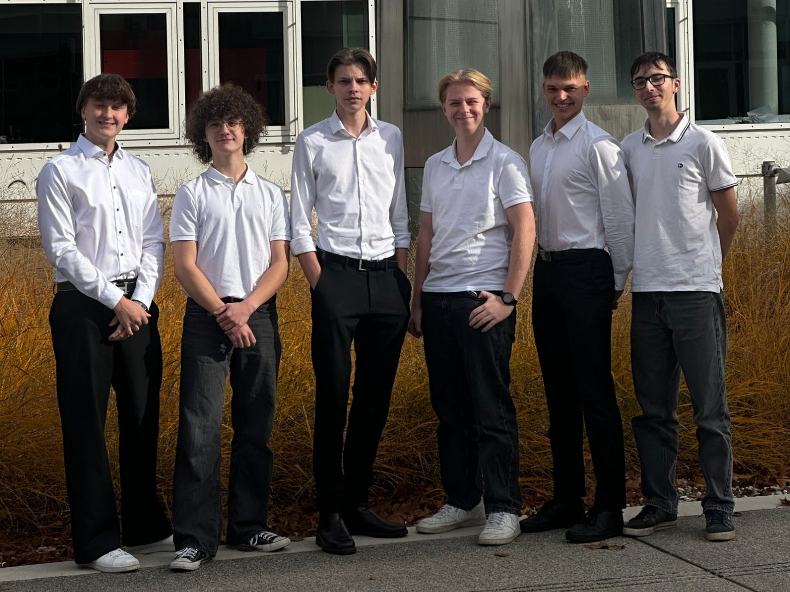
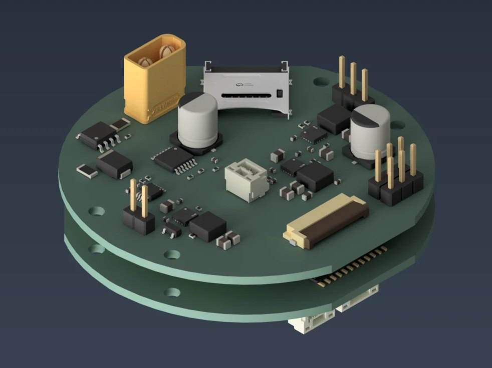

Messdaten
Temperatur und Luftdruck werden während des Sinkflugs erfasst und per LoRa an die Bodenstation übertragen.

Team SWASH · CanSat Austria
Unser CanSat misst Temperatur und Luftdruck im Sinkflug, sendet die Daten zur Bodenstation und erprobt eine gesteuerte Autorotation für eine präzise Landung.

Unsere Motivation
Wir machen bei CanSat Austria mit, weil wir Technik nicht nur im Unterricht besprechen, sondern selbst entwerfen, bauen und erproben wollen. Dabei verbinden wir Mechanik, Elektronik, Programmierung und naturwissenschaftliche Auswertung in einem gemeinsamen Projekt. Besonders reizt uns, Messdaten zuverlässig zu übertragen und einen kontrollierten Sinkflug zu entwickeln. Im Wettbewerb lernen wir, unsere Ideen an Tests zu messen und Ergebnisse nachvollziehbar zu dokumentieren.
Wir verbinden Messinstrumente, Flugsteuerung und Bildauswertung in einem kompakten System.
Temperatur und Luftdruck werden während des Sinkflugs erfasst und per LoRa an die Bodenstation übertragen.
Ein Rotor und eine aktive Steuerung sollen den Sinkflug stabilisieren und eine zielgenaue Landung ermöglichen.
NDVI ist ein Vegetationsindex, der aus Bilddaten Hinweise auf den Zustand von Pflanzen ableitet. Eine Kamera soll die dafür nötigen Aufnahmen liefern.
Vom Test zum Flug
Auf der Ergebnisseite sammeln wir Vorversuche und ergänzen nach dem Flug Messdaten und Auswertungen.
Zu den ErgebnissenCanSat Austria ist ein Schulwettbewerb von ESERO Austria, bei dem Teams einen Satelliten im Getränkedosenformat bauen und eine eigene Mission umsetzen. Team SWASH nimmt in der Saison 2026/27 teil.